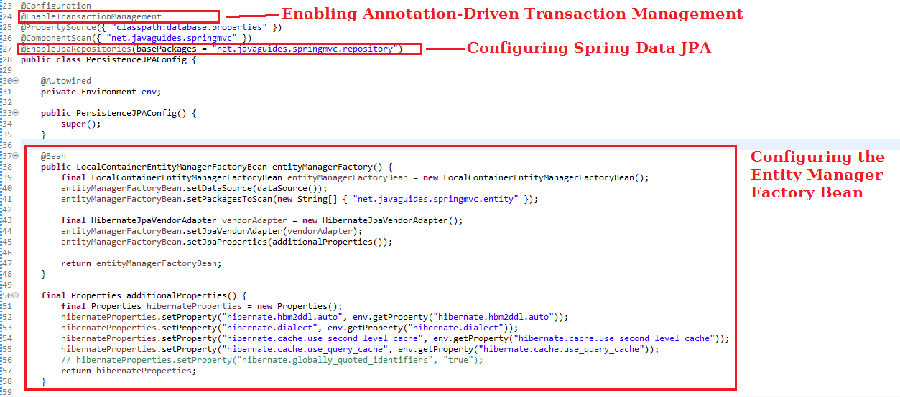
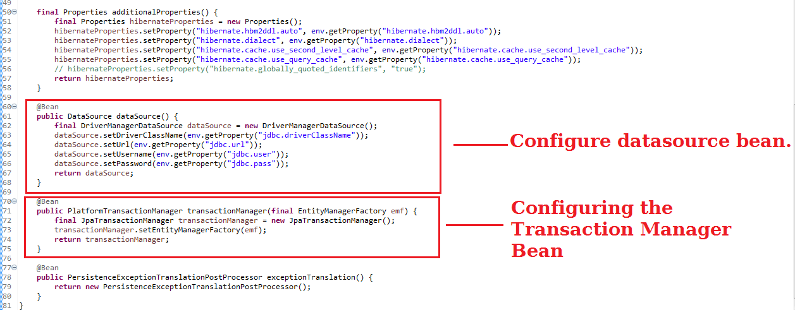

In the previous article, we have seen What is Spring Data JPA and its interfaces. In this article, we will discuss how we can configure the persistence layer of a Spring application that uses Spring Data JPA and Hibernate.
Note that we are not using Spring Boot. We are using the plain Spring framework to demonstrate configuring the persistence layer of a Spring application that uses Spring Data JPA and Hibernate.
For the Spring Boot project, check out Spring Boot with Spring Data JPA.
We can create the configuration class, which configures the persistence layer of a Spring application, by following these steps:
The below diagram shows easy steps to configure the persistence layer of a Spring application that uses Spring Data JPA and Hibernate:
 But before we can get started, we have to create the configuration class that configures the persistence layer of our application.
The source code of the PersistenceJPAConfig class looks as follows:
@Configuration
@ComponentScan({ "net.javaguides.springmvc" })
public class PersistenceJPAConfig {
}
@ComponentScan tells Spring to look for other components,
configurations, and services in the hello
package, allowing it to find the controllers.
# jdbc.X
jdbc.driverClassName=com.mysql.jdbc.Driver
jdbc.url=jdbc:mysql://localhost:3306/demo?useSSL=false
jdbc.user=root
jdbc.pass=root
# hibernate.X
hibernate.dialect=org.hibernate.dialect.MySQL5Dialect
hibernate.show_sql=false
hibernate.hbm2ddl.auto=create-drop
hibernate.cache.use_second_level_cache=false
hibernate.cache.use_query_cache=false
We can configure the Datasource bean by following these steps:
close() method of the created DataSource object is invoked when the application context is closed.DriverManagerDataSource object and return the created
object.
@Bean
public DataSource dataSource() {
final DriverManagerDataSource dataSource = new DriverManagerDataSource();
dataSource.setDriverClassName(env.getProperty("jdbc.driverClassName"));
dataSource.setUrl(env.getProperty("jdbc.url"));
dataSource.setUsername(env.getProperty("jdbc.user"));
dataSource.setPassword(env.getProperty("jdbc.pass"));
return dataSource;
}
Note that, in this sample code we are using DriverManagerDataSource
datasource which is a simple
implementation of the standard JDBC javax.sql.DataSource interface,
configuring the plain old JDBC java.sql.DriverManager via bean properties,
and returning a new java.sql.Connection from every getConnection
call.
We can configure the entity manager factory bean by following these steps:
final LocalContainerEntityManagerFactoryBean entityManagerFactoryBean = new LocalContainerEntityManagerFactoryBean();final LocalContainerEntityManagerFactoryBean entityManagerFactoryBean = new LocalContainerEntityManagerFactoryBean();
entityManagerFactoryBean.setDataSource(dataSource());
final LocalContainerEntityManagerFactoryBean entityManagerFactoryBean = new LocalContainerEntityManagerFactoryBean();
entityManagerFactoryBean.setDataSource(dataSource());
final HibernateJpaVendorAdapter vendorAdapter = new HibernateJpaVendorAdapter();
entityManagerFactoryBean.setJpaVendorAdapter(vendorAdapter);
final LocalContainerEntityManagerFactoryBean entityManagerFactoryBean = new LocalContainerEntityManagerFactoryBean();
entityManagerFactoryBean.setDataSource(dataSource());
final HibernateJpaVendorAdapter vendorAdapter = new HibernateJpaVendorAdapter();
entityManagerFactoryBean.setJpaVendorAdapter(vendorAdapter);
entityManagerFactoryBean.setPackagesToScan(new String[] { "net.javaguides.springmvc.entity" });
final Properties additionalProperties() {
final Properties hibernateProperties = new Properties();
hibernateProperties.setProperty("hibernate.hbm2ddl.auto", env.getProperty("hibernate.hbm2ddl.auto"));
hibernateProperties.setProperty("hibernate.dialect", env.getProperty("hibernate.dialect"));
hibernateProperties.setProperty("hibernate.cache.use_second_level_cache", env.getProperty("hibernate.cache.use_second_level_cache"));
hibernateProperties.setProperty("hibernate.cache.use_query_cache", env.getProperty("hibernate.cache.use_query_cache"));
// hibernateProperties.setProperty("hibernate.globally_quoted_identifiers", "true");
return hibernateProperties;
}
The method that configures the entity manager factory bean looks as follows:
@Bean
public LocalContainerEntityManagerFactoryBean entityManagerFactory() {
final LocalContainerEntityManagerFactoryBean entityManagerFactoryBean = new LocalContainerEntityManagerFactoryBean();
entityManagerFactoryBean.setDataSource(dataSource());
entityManagerFactoryBean.setPackagesToScan(new String[] {
"net.javaguides.springmvc.entity"
});
final HibernateJpaVendorAdapter vendorAdapter = new HibernateJpaVendorAdapter();
entityManagerFactoryBean.setJpaVendorAdapter(vendorAdapter);
entityManagerFactoryBean.setJpaProperties(additionalProperties());
return entityManagerFactoryBean;
}
final Properties additionalProperties() {
final Properties hibernateProperties = new Properties();
hibernateProperties.setProperty("hibernate.hbm2ddl.auto", env.getProperty("hibernate.hbm2ddl.auto"));
hibernateProperties.setProperty("hibernate.dialect", env.getProperty("hibernate.dialect"));
hibernateProperties.setProperty("hibernate.cache.use_second_level_cache", env.getProperty("hibernate.cache.use_second_level_cache"));
hibernateProperties.setProperty("hibernate.cache.use_query_cache", env.getProperty("hibernate.cache.use_query_cache"));
// hibernateProperties.setProperty("hibernate.globally_quoted_identifiers", "true");
return hibernateProperties;
}
@Bean
public DataSource dataSource() {
final DriverManagerDataSource dataSource = new DriverManagerDataSource();
dataSource.setDriverClassName(env.getProperty("jdbc.driverClassName"));
dataSource.setUrl(env.getProperty("jdbc.url"));
dataSource.setUsername(env.getProperty("jdbc.user"));
dataSource.setPassword(env.getProperty("jdbc.pass"));
return dataSource;
}
Because we are using JPA, we have to create a transaction manager bean that integrates the JPA provider with the Spring transaction mechanism. We can do this by using the JpaTransactionManager class as the transaction manager of our application.
We can configure the transaction manager bean by following these steps:
final JpaTransactionManager transactionManager = new JpaTransactionManager();
final JpaTransactionManager transactionManager = new JpaTransactionManager();
transactionManager.setEntityManagerFactory(emf);
The method that configures the transaction manager bean looks as follows:
@Bean
public PlatformTransactionManager transactionManager(final EntityManagerFactory emf) {
final JpaTransactionManager transactionManager = new JpaTransactionManager();
transactionManager.setEntityManagerFactory(emf);
return transactionManager;
}
We can enable annotation-driven transaction management by annotating the b>PersistenceJPAConfig class
with the
@EnableTransactionManagement annotation.
The relevant part of the PersistenceJPAConfig class looks as follows:
@Configuration
@EnableTransactionManagement
@ComponentScan({ "net.javaguides.springmvc" })
public class PersistenceJPAConfig {
}
We can configure Spring Data JPA by following these steps:
Enable Spring Data JPA by annotating the PersistenceContext class with the @EnableJpaRepositories annotation
and also configure the base packages that are scanned when Spring Data JPA creates implementations for our
repository interfaces.
The relevant part of the PersistenceJPAConfig class looks as follows:
@Configuration
@EnableTransactionManagement
@ComponentScan({ "net.javaguides.springmvc" })
@EnableJpaRepositories(basePackages = "net.javaguides.springmvc.repository")
public class PersistenceJPAConfig {
}
We have created the database.properties file in step 1, which contains the
properties used by our application
context configuration class. Now we read these properties using @PropertySource annotation
and configure
them in respective beans.
@Configuration
@EnableTransactionManagement
@PropertySource({ "classpath:database.properties" })
@ComponentScan({ "net.javaguides.springmvc" })
@EnableJpaRepositories(basePackages = "net.javaguides.springmvc.repository")
public class PersistenceJPAConfig {
@Autowired
private Environment env;
}
After successfully configuring the persistence layer of our example application, our PersistenceJPAConfig class looks like this:
package net.javaguides.springmvc.config;
import java.util.Properties;
import javax.persistence.EntityManagerFactory;
import javax.sql.DataSource;
import org.springframework.beans.factory.annotation.Autowired;
import org.springframework.context.annotation.Bean;
import org.springframework.context.annotation.ComponentScan;
import org.springframework.context.annotation.Configuration;
import org.springframework.context.annotation.PropertySource;
import org.springframework.core.env.Environment;
import org.springframework.dao.annotation.PersistenceExceptionTranslationPostProcessor;
import org.springframework.data.jpa.repository.config.EnableJpaRepositories;
import org.springframework.jdbc.datasource.DriverManagerDataSource;
import org.springframework.orm.jpa.JpaTransactionManager;
import org.springframework.orm.jpa.LocalContainerEntityManagerFactoryBean;
import org.springframework.orm.jpa.vendor.HibernateJpaVendorAdapter;
import org.springframework.transaction.PlatformTransactionManager;
import org.springframework.transaction.annotation.EnableTransactionManagement;
@Configuration
@EnableTransactionManagement
@PropertySource({
"classpath:database.properties"
})
@ComponentScan({
"net.javaguides.springmvc"
})
@EnableJpaRepositories(basePackages = "net.javaguides.springmvc.repository")
public class PersistenceJPAConfig {
@Autowired
private Environment env;
public PersistenceJPAConfig() {
super();
}
@Bean
public LocalContainerEntityManagerFactoryBean entityManagerFactory() {
final LocalContainerEntityManagerFactoryBean entityManagerFactoryBean = new LocalContainerEntityManagerFactoryBean();
entityManagerFactoryBean.setDataSource(dataSource());
entityManagerFactoryBean.setPackagesToScan(new String[] {
"net.javaguides.springmvc.entity"
});
final HibernateJpaVendorAdapter vendorAdapter = new HibernateJpaVendorAdapter();
entityManagerFactoryBean.setJpaVendorAdapter(vendorAdapter);
entityManagerFactoryBean.setJpaProperties(additionalProperties());
return entityManagerFactoryBean;
}
final Properties additionalProperties() {
final Properties hibernateProperties = new Properties();
hibernateProperties.setProperty("hibernate.hbm2ddl.auto", env.getProperty("hibernate.hbm2ddl.auto"));
hibernateProperties.setProperty("hibernate.dialect", env.getProperty("hibernate.dialect"));
hibernateProperties.setProperty("hibernate.cache.use_second_level_cache", env.getProperty("hibernate.cache.use_second_level_cache"));
hibernateProperties.setProperty("hibernate.cache.use_query_cache", env.getProperty("hibernate.cache.use_query_cache"));
// hibernateProperties.setProperty("hibernate.globally_quoted_identifiers", "true");
return hibernateProperties;
}
@Bean
public DataSource dataSource() {
final DriverManagerDataSource dataSource = new DriverManagerDataSource();
dataSource.setDriverClassName(env.getProperty("jdbc.driverClassName"));
dataSource.setUrl(env.getProperty("jdbc.url"));
dataSource.setUsername(env.getProperty("jdbc.user"));
dataSource.setPassword(env.getProperty("jdbc.pass"));
return dataSource;
}
@Bean
public PlatformTransactionManager transactionManager(final EntityManagerFactory emf) {
final JpaTransactionManager transactionManager = new JpaTransactionManager();
transactionManager.setEntityManagerFactory(emf);
return transactionManager;
}
@Bean
public PersistenceExceptionTranslationPostProcessor exceptionTranslation() {
return new PersistenceExceptionTranslationPostProcessor();
}
}
<?xml version="1.0" encoding="UTF-8"?>
<beans
xmlns="http://www.springframework.org/schema/beans"
xmlns:xsi="http://www.w3.org/2001/XMLSchema-instance"
xmlns:tx="http://www.springframework.org/schema/tx"
xsi:schemaLocation="
http://www.springframework.org/schema/beans
http://www.springframework.org/schema/beans/spring-beans-3.2.xsd
http://www.springframework.org/schema/tx
http://www.springframework.org/schema/tx/spring-tx-3.2.xsd">
<bean id="myEmf"
class="org.springframework.orm.jpa.LocalContainerEntityManagerFactoryBean">
<property name="dataSource" ref="dataSource" />
<property name="packagesToScan" value="org.baeldung.persistence.model" />
<property name="jpaVendorAdapter">
<bean class="org.springframework.orm.jpa.vendor.HibernateJpaVendorAdapter" />
</property>
<property name="jpaProperties">
<props>
<prop key="hibernate.hbm2ddl.auto">create-drop</prop>
<prop key="hibernate.dialect">org.hibernate.dialect.MySQL5Dialect</prop>
</props>
</property>
</bean>
<bean id="dataSource"
class="org.springframework.jdbc.datasource.DriverManagerDataSource">
<property name="driverClassName" value="com.mysql.cj.jdbc.Driver" />
<property name="url" value="jdbc:mysql://localhost:3306/spring_jpa" />
<property name="username" value="tutorialuser" />
<property name="password" value="tutorialmy5ql" />
</bean>
<bean id="transactionManager"
class="org.springframework.orm.jpa.JpaTransactionManager">
<property name="entityManagerFactory" ref="myEmf" />
</bean>
<tx:annotation-driven />
<bean id="persistenceExceptionTranslationPostProcessor" class=
"org.springframework.dao.annotation.PersistenceExceptionTranslationPostProcessor" />
</beans>